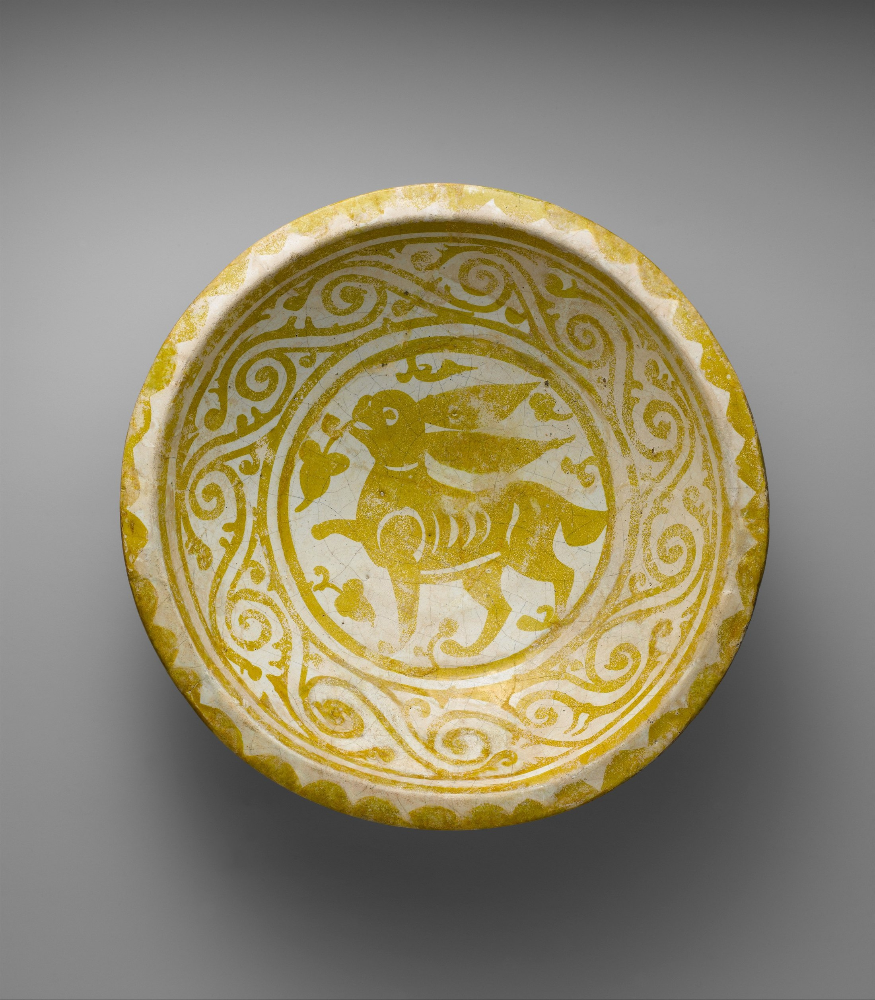

把奔跑，留在一只碗里
耳朵向后，枝叶向前。一点金黄，让静止的圆面有了心跳。

事实据馆藏记录；构图、配色及情感判断为编辑解读。
作品档案 / 事实
《奔兔纹碗》为埃及制陶作品，陶胎，不透明白釉上饰金属光泽彩；直径 26 厘米。馆藏编号 64.261。馆方未列出制作者姓名，不能据此补写个人生平。
构图 / 让圆形容纳速度
先看中央小兔：头朝左，长耳向右拖出两道尖形，前后方向彼此牵拉。兔身近乎横向展开，碗沿却把视线引成圆周。外圈连续的卷草纹像缓慢转动的节拍器，中央动物则像突然抢先半拍。圆形负责收住画面，伸展的耳、腿负责把它打开。
色彩 / 少一种颜色，多一层秩序
这张馆藏照片里，主调是乳白、芥末金与偏橄榄的暗金。它们构成低色相跨度的暖类似色关系；识别图形主要靠明度差，而非互补色冲撞。白色细线切开兔身，让密实的金色也能呼吸。照片外部的灰背景衬出暖意，但它属于拍摄呈现，不是陶碗纹样。
光影 / 图案与器形，各自发声
兔子主要依赖平涂轮廓，几乎不用明暗塑造体积；真正的深浅来自碗的凹面。照片中，上方内壁较暗，下面的弧带较亮，提醒我们眼前不是一张平面图。金属光泽会随照明与观看角度变化，单张照片只记录其中一种状态，不能当作恒定的实物色。
技法与作者背景 / 无名的手，有来处
馆方将它放在法蒂玛时期陶器的语境中，并指出金属光泽彩从伊拉克传入埃及。一般工艺是在已烧成的釉面上绘含铜、银氧化物的颜料，经后续低氧烧成形成金属光泽；这是工艺背景，并非对此碗配方的检测结论。轮廓既承担动物造型，又与周围纹样共用一种线条语言。
为何动人 / 观点
最让我停留的不是它有多古老，而是嘴边那一小枝：一个奔跑的身体，竟还有余裕衔住一点植物。它让速度显得轻快，而非紧张。这个阅读不等于已证实的象征寓意；我们不知道工匠是否想表达同一种心情。但一件日常尺度的器物，确实能让观看慢下来。
借来练习 / 把动势画进秩序
试做一张方形海报：用一个圆框稳定重心，把主体的两条线向相反方向拉开，再用重复小弧线作边饰。配色可用乳白 #F3EBDD 70%＋芥末金 #B49B35 25%＋深褐 #3B3525 5%。这些是编辑练习近似色与建议面积，并非实物测色；先缩成缩略图检查主体，再加纹样。